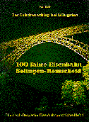
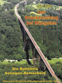
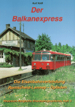
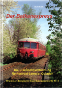
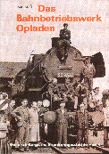
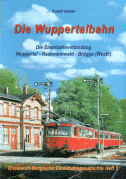
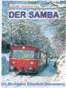
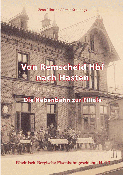
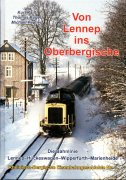

Krümelbahn
KrümelbahnRheinisch-Bergische Eisenbahngeschichte
  |
Kaiß, Kurt Der Brückenschlag bei Müngsten Die Bahnlinie Solingen - Remscheid Rheinisch-Bergische Eisenbahngeschichte Heft 1 Verlag A.Kaiß, Leichlingen 2013, völlig überarbeitete Auflage ISBN 978-3-9809357-8-4 |
| Kaiß, Kurt/Zimmermann, Michael Die Korkenzieherbahn Auf Nebenbahngleisen von Solingen nach Vohwinkel Rheinisch-Bergische Eisenbahngeschichte Heft 2 Verlag A.Kaiß, Leichlingen 2005, 2. Auflage ISBN 3-9809357-0-1 |
 |
  |
Kaiß, Kurt Der Balkanexpress Die Eisenbahnverbindung Remscheid-Lennep - Opladen Rheinisch-Bergische Eisenbahngeschichte Heft 3 Verlag A.Kaiß, Leichlingen 2022, aktualisierte und erweitere Neuauflage ISBN 978-3-9818345-3-6 |
| Kaiß, Kurt Das Bahnbetriebswerk Opladen Rheinisch-Bergische Eisenbahngeschichte Heft 4 Verlag A.Kaiß, Leichlingen 2002 ISBN 3-9806103-3-0 |
 |
 |
Inkeller, Rudolf Die Wuppertalbahn Die Eisenbahnverbindung Wuppertal - Radevormwald - Brügge(Westf.) Rheinisch-Bergische Eisenbahngeschichte Heft 5 Verlag A.Kaiß, Leichlingen 2004, 3.Auflage ISBN 3-9806103-7-3 |
| Kaiß, Kurt/Peplies, Michael Der Samba Die Stichbahn Elberfeld - Cronenberg Rheinisch-Bergische Eisenbahngeschichte Heft 6 Verlag A.Kaiß, Leichlingen 2007 ISBN 3-9806103-6-5 |
 |
 |
Pillmann, Zeno/Schürings, Armin Von Remscheid Hbf nach Hasten Die Nebenbahn zur Filiale Rheinisch-Bergische Eisenbahngeschichte Heft 7 Verlag A.Kaiß, Leichlingen 2009 ISBN 978-3-9809357-5-3 |
| Kaiß, Kurt/Kugel, Thomas/Peplies, Michael Von Lennep ins Oberbergische Die Eisenbahnlinie Lennep-Hückeswagen-Wipperfürth-Marienheide Rheinisch-Bergische Eisenbahngeschichte Heft 8 Verlag A.Kaiß, Leichlingen 2018 ISBN 978-9818345-0-5 |
 |